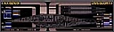
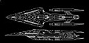

INDEX
»
ADATOK
»
KÖNYVESPOLC
»
EGY ÚJ KOR
»
KÉPGALÉRIA
» AZ 'ALN' REGÉNYHEZ KAPCSOLÓDÓ KÉPEK
A Legújabb Nemzedék
A regényhez kapcsolódó képek kis tárháza. Remélhetõleg folymatosan bõvülni fog.
Képgaléria
Minta
Rövid leírás
Angyal osztályú tervezési projekt logója
Angyal osztályú tervezési projekt logója, Magyar
A Glory kivetítõje a Navigációs pulttól nézve
A Glory hídjának felülnézeti képe
Az Elsõk Birodalmának jelképe
A Glory szolgálatba állítási emlékplakettje
A Glory szolgálatba állítási emlékplakettje, Magyar

A Glory Fõbb Rendszerdiagramja (Master System Display)

Glory felül és oldalnézeti rajza
Az Elsõk Õshazája kultúrájuk virágzásának hajnalán
Vicky Murphy Holoképe
A Csillagflotta Parancsnokság logója
A "Mennydörgés Osztag" logója
Az Explorer (Glory testvérhajója) szolgálatba állítási emlékplakettje
Az Explorer (Glory testvérhajója) szolgálatba állítási emlékplakettje, Magyar
Almenü
Könyvespolc
Regény, fõbb adatok
Így született
Kulisszák mögött
Képgaléria
Utolsó módosítás: